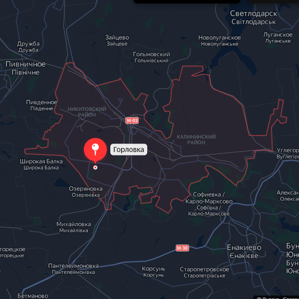

Инфраструктура Нашего Города
Историческая справка:
 Большое количество речек и богатые залежи кремня, еще со времен каменного века, послужили толчком к освоению этих территорий. Затем, кочевые племена, сменяя друг друга, начиная с Х в. до н.э., использовали эти земли. Киммерийцы, скифы, сарматы, готы, печенеги, половцы, татаро-монголы – сотни веков копытами своих коней топтали эти просторы. С середины XV в. эту территорию осваивали казаки. Здесь проходили пути сообщения между запорожскими и донскими казаками. С 1665 г. они осели в балках Сухой Яр и Житний Яр, урочище Жованский лес, по р. Бахмутка (совр. пос. Зайцево), в 1696-1707 гг. – по рекам Железной и Железная Балка. В 70-е годы XVIII ст. переселенцы из Валахии и Молдавии с остатками 9-ой военно-земледельческой роты из Славяно-Сербии создали слободу Государев Байрак. Согласно постановлению Кабинета Министров Украины от 26.07.2001 №878 датой основания Горловки считается 1779 год. В 1868-1869 гг. через земли крестьян сел Железного и Зайцево прошла линия Курско-Харьковско-Азовской железной дороги. Согласно условиям концессии, строитель дороги С.С. Поляков обязался построить железоделательный завод, рудники и копи вдоль дороги, для чего в числе других инженеров был приглашен П.Н. Горлов. В 1871-1873 гг. Расстояние до Донецка: по автодорогам — 37 км, по ж/д — 53 км. Город находится на западных отрогах Донецкого кряжа. По территории города протекают 29 рек, но ни одна река его не пересекает. В городе находятся истоки таких рек, как Лугань (приток Северского Донца), Бахмут (приток Северского Донца), Корсунь (приток Крынки). Все — реки бассейна Азовского моря.
- Урочище Софиевское
- Балка Поклонская
Административное Деление:
Горловcкий район занимает территорию 422 км², из них около 150 км² — территория города Горловки. На одного жителя приходится 340 м² зелёных насаждений. Имеется 3 административных района:
- Калининский район
- Никитовский район
- Центрально-Городской район
Транспорт
Автобус № 1 «ст. Никитовка – ТТУ»
Автобус № 2 «ул. Гречнева – Бессарабка»
Автобус № 3 «Кольцевой»
Автобус № 5 «ул. Герцена – пос. Кондратьевка»
Автобус № 6 «ТТУ – пос. Октябрьский»
Автобус № 8 «поселок шахты Гагарина – ул. Гречнева»
Автобус № 10 «ул. Герцена – пос. шахты им. Ленина»
Автобус № 11 «Площадь Победы – пос. Кочегарка»
Автобус № 12 «шахта Калинина – пос. Байрак»
Автобус № 13 «пос. Комарова - Химзавод»
Автобус № 14 «Бессарабка – ППТК «Горловка» / «ЗПК "Горловка"– ППТК «Горловка»
Автобус № 15 и № 87 «пос. Озеряновка – Автовокзал» и маршрут № 87 «пос. Михайловка – Автовокзал» (объединенный)
Автобус № 16 «ул. Волкова – ул. 40 лет Украины»
Автобус № 17 «пос.шахты 6/7 – ул.Гречнева»
Автобус № 18 «Автомагазин – пос. Широкая Балка»
Автобус № 19 «88 квартал – ул.Волкова»
Автобус № 21 «88 квартал - Автовокзал»
Автобус № 22 «ул. Волкова - Химзавод»
Автобус № 24 «Химзавод – ж/м Строителей»
Автобус № 25 «Автовокзал – Домовая кухня»
Автобус № 26 «ТТУ - Автомагазин»
Автобус № 27 «ул. 40 лет Украины – ул. Герцена»
Автобус № 28А «пос. Кузнецовка – жм Комсомолец»
Автобус № 29А «Кольцевой» (пос Комарова -ж/м Комсомолец - ж/м Строитель - 2 больница - пос Бессарабка -пос Комарова)
Автобус № 29Б «Кольцевой» (ж/м Комсомолец - пос.Бессарабка - Металлобаза - ж/м Комсомолец)
Автобус № 30 «ул. Герцена – пос. Воробьевка»
Автобус № 32 «пос. Мирный – ул. Герцена»
Автобус № 35 «Кольцевой»
Автобус № 37 «ул. Герцена – пос. Аксёновка»
Автобус № 77 «Автовокзал – пгт. Пантелеймоновка»
Автобус № 81 «ст. Никитовка - пгт. Гольмовский»
Автобус № 82 «ст. Никитовка – пгт. Зайцево»
Автобус № 89 «ул. Герцена – пос. Гурты»
Автобус № 100 «ППТК "Горловка" – пос. Комарова»
Автобус № 101 «ул. Жукова – шахта им. Калинина»
Автобус № 102 "88 квартал- ул. 40 лет Украины"
Скачать детальное расписание транспорта: